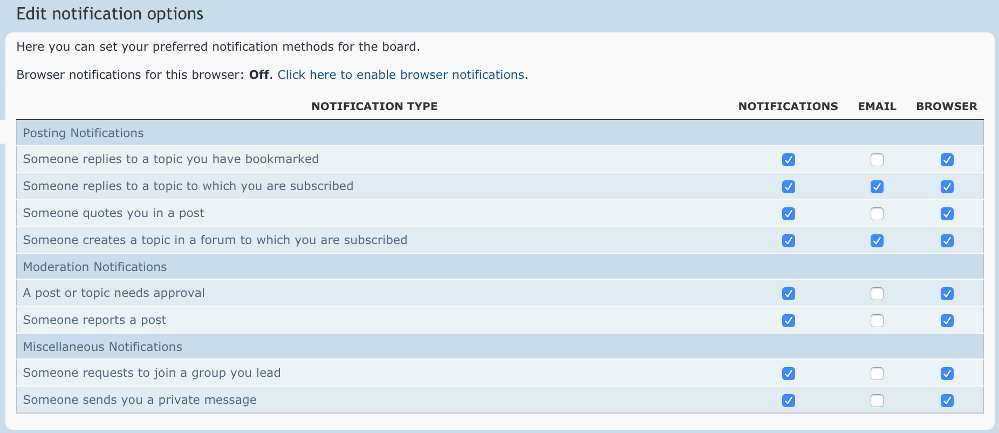
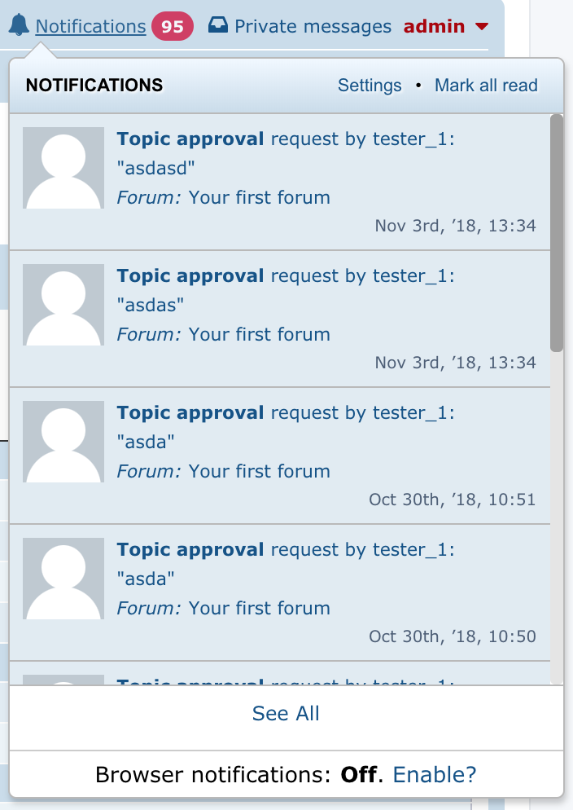
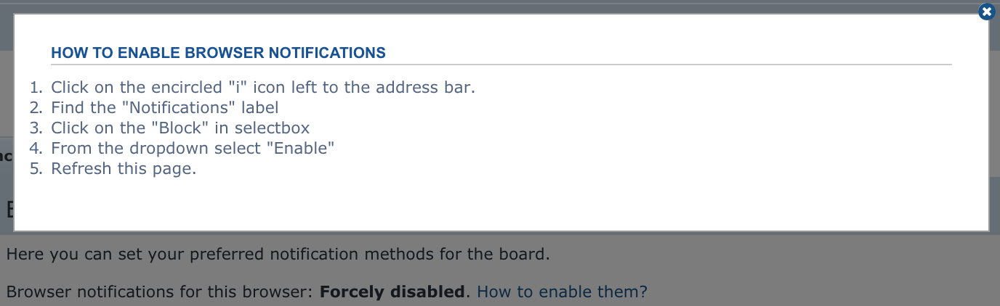

phpBB | Browser and Mobile Notifications, Documentation by Jakub Senko, v1.0
phpBB | Browser and Mobile Notifications Extension
Thank you for purchasing my phpBB extension. If you have any questions that are beyond the scope of this help file,
please feel free to email me.
Thanks so much!
Table of Contents
- Requirements
- Installation instructions
- Supported Browsers
- Usage guide
- Supported Styles
- Sources and Credits
A) Requirements - top
This extension needs:
- PHP 7.1
- GMP PHP extension
- mbstring PHP extension
- curl PHP extension
- OpenSSL PHP extension
- phpBB 3.2.0
- HTTPS on the domain
B) Installation instructions - top
Since you are reading this help file, you already extracted the archive which is the first step to successful installation.
Great!
Next steps are:
-
Upload directory senky/ to ext/ directory of your board. It is possible that directory
senky/ already exists if you are using my other extensions. In that case copy
senky/pushnotifications/ to ext/senky/.
- Go to ACP of your board, tab Customise.
- Find Browser & Mobile Notifications and click Enable next to it.
- Done! That was easy, wasn't it? :)
- Extension doesn't have any complicated settings, just enjoy.
C) Supported Browsers - top
Push Notifications (as are browser and mobile notifications called technically) are supported by:
- Google Chrome
- Mozilla Firefox
- Edge
- Opera
- Chrome for Android
- Firefox for Android
- Opera Mobile for Android
- UC Browser for Android
- Samsung Internet for Android
Unfortunately, Safari nor any iOS browser is supported due to restrictions by Apple.
D) Usage Guide - top
Browser and Mobile Notifications extension embraces a careful, non-invasive approach by offering a user the option
to enable browser notifications only when they are already dealing with notifications. Browser and Mobile Notifications
extension options are located in two places, Notification settings in UCP and Notifications dropdown:


By default, notifications are disabled (off). Enabling requires user to interact with a browser popup window requesting
a permission to send notifications. This is a security requirement by all browsers. After user grants the permissions,
browser notifications are automatically enabled.
There are three possible scenarios when notifications are not delivered:
-
Browser is unsupported. In this case all Browser and Mobile Notifications extension will be hidden.
-
User force-disabled notifications in browser. Browser and Mobile Notifications extension will display
a manual on how to re-enable them.

-
User was logged out. Browser and Mobile Notifications extension won't display notification after user
was logged out for security reasons.
E) Supported Styles - top
Explicitly, Browser and Mobile Notifications extension supports the most used phpBB styles:
- Absolution
- BBOOTS
- FLATBOOTS
- prosilver
- Ravaio
- SE Square Left
- we_universal
Implicitly, the extension works with any
prosilver-based style.
Email me if the extension looks ugly on your style.
F) Sources and Credits - top
I've used the following libraries or other files as listed.
- minishlink/web-push library from Louis Lagrange
Once again, thank you so much for purchasing this phpBB extension. As I said at the beginning, I'd be glad to help you if
you have any questions relating to this extension. No guarantees, but I'll do my best to assist. If you have a more general
question relating to the phpBB extensions, you might consider visiting the forums and asking your question in the
phpbb.com support forums.
Jakub Senko
Go To Table of Contents